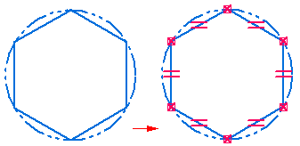
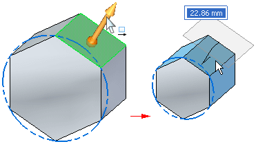
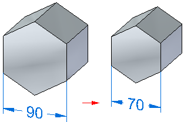

Polygon by Center command
Use the Polygon by Center command to draw a 2D polygon using two points. The first point defines the center of the polygon (1). The second point defines a vertex or the midpoint of a side on the polygon (2).

You can use the command bar to specify which method you want to use.
-
Polygon by vertex

-
Polygon by midpoint

You cannot change the number of sides for a polygon after it is created.
In 3D documents, a 2D polygon consists of a series of connected lines that are constrained to a circle. You can use the Relationship Handles command to control the display of the relationships.

In a draft document, the polygon circle is not created.
3D features constructed from 2D polygons
When you construct a 3D feature using a 2D polygon, a polygon relationship is added to the Relationships collector in PathFinder. The polygon relationship ensures that the 3D feature continues to behave as a regular polygon when you edit the 3D feature. For example, if you use the steering wheel to move one of the polygon faces, the remaining polygon faces also change size to maintain the regular polygon shape.

You can also place a dimension between two faces or edges on a polygon to control its size precisely. For example, you can place a dimension between two parallel sides of a polygon with an even number of sides, and then edit the dimension to modify the size of the polygon.

If you delete the polygon relationship in PathFinder, the feature no longer behaves as a regular polygon. You cannot change the number of sides of a polygon relationship to change the number of sides for the polygon.
If you delete or modify a face on a feature constructed using a polygon, the polygon behavior is maintained until only three sides remain. The polygon behavior is also maintained if you pattern a feature with a polygon relationship.
To disable the polygon relationship when performing synchronous edits to the model, delete the specific polygon relationship under Relationships in PathFinder. You can only disable the polygon behavior for all faces of the polygon, not individual faces.